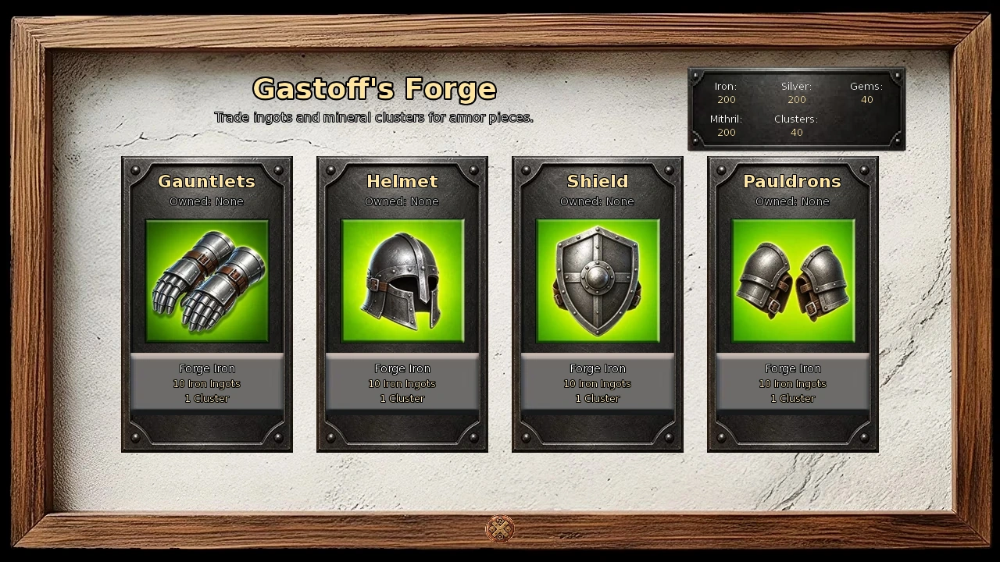
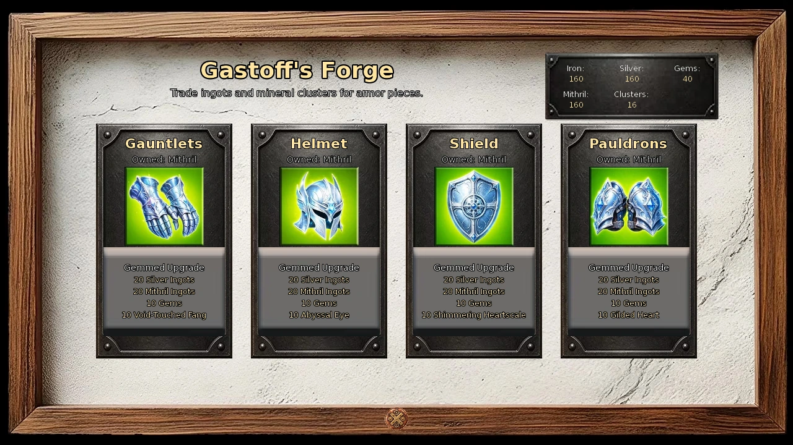
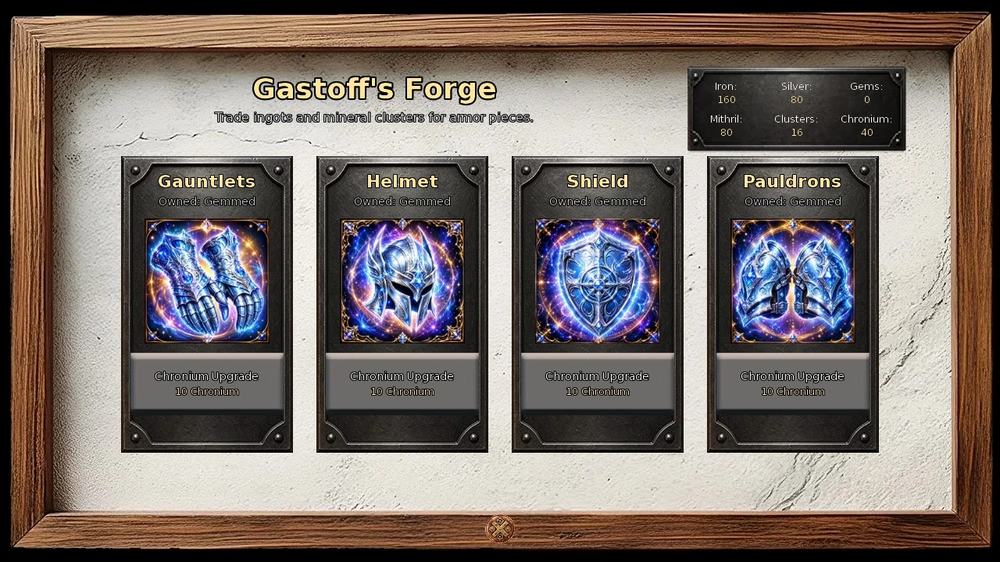
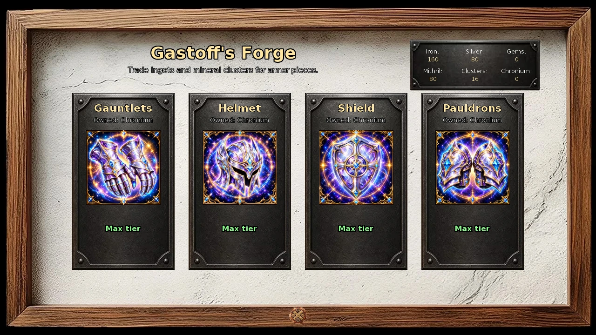
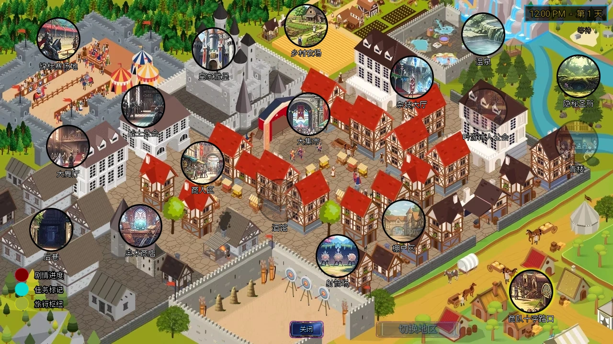
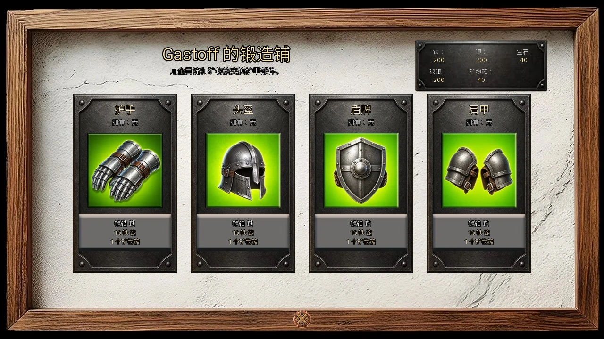
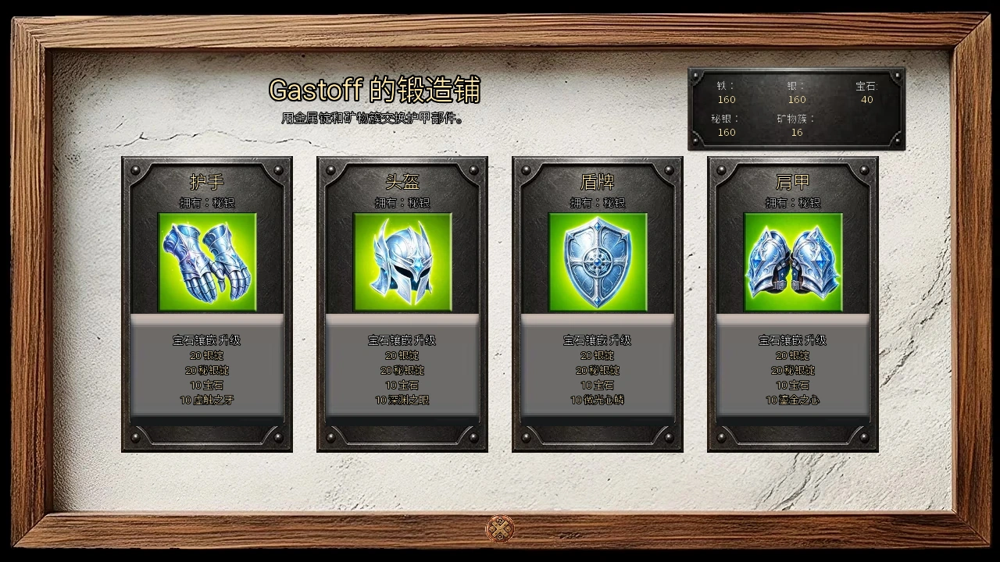
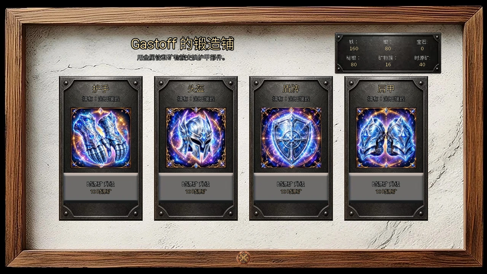
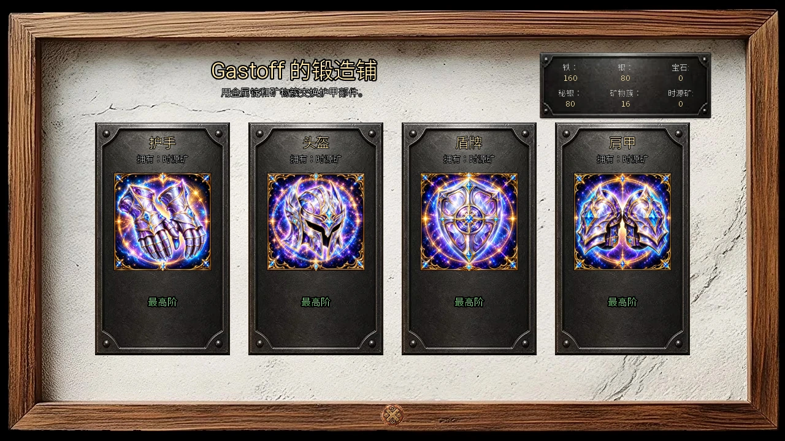

Select a screenshot to enlarge it. Screens show example inventories and progress.
Three ways Gastoff helps you grow
Gastoff’s Blacksmith Shop handles your ordinary melee weapon and armor, four additional Forge pieces, and a group of major construction commissions. These use separate resources and progress independently.
- Starting equipment: spend Wealth and Supplies Materials to raise your sword and main armor through level 5.
- Forge pieces: spend mining resources to make Gauntlets, a Helmet, a Shield and Pauldrons. Their passive effects stack with your main equipment.
- Construction: commission new facilities once you meet their reputation, resource and other requirements.
For a first visit, check which equipment slot is still level 0. A sword or armor purchase costs $150 and 20 minutes. For your first Forge piece, bring 10 Iron Ingots and 1 Mineral Cluster; choose the benefit you need from the combat table below.
Where to go and what to bring
Visit Medieval → Kings Demesne → Merchants Quarter → Blacksmith Shop, from 06:00 to 21:00. Gastoff is there every day during those hours. His introduction plays automatically on your first eligible visit.
The Village Market in Village Outskirts offers the same level-1 sword and armor purchases, during the same hours. Return to Gastoff for the ordinary upgrades after that. A Martial Artist starts with melee level 1; a Body Builder or Athlete starts with armor level 1, so that slot skips its initial purchase.
Open Use the Forge at the shop to craft the extra pieces. Opening the screen and forging cost no Wealth or in-game time; crafting consumes the listed resources. Supplies Materials cannot substitute for mining ingots. Check whole resource counts: fragment progress is not spendable as a whole ingot.
Five Forge tiers, four independent pieces
Each piece advances in order: Iron → Silver → Mithril → Gemmed → Chronium. You cannot skip a tier. Crafting replaces that piece’s previous version. All four are passive Key Items: owning them applies their effects, with no equipment-slot assignment.
| New tier | Resources consumed |
|---|---|
| Iron | 10 Iron Ingots + 1 Mineral Cluster |
| Silver | 10 Silver Ingots + 2 Mineral Clusters |
| Mithril | 10 Mithril Ingots + 3 Mineral Clusters |
| Gemmed | 20 Silver Ingots + 20 Mithril Ingots + 10 Gems + 10 matching monster drops |
| Chronium | 10 Chronium; requires the Gemmed piece and Cid’s Chronium introduction |
The screen shows your highest owned tier and the next available upgrade. An unaffordable button is disabled. The final label is Max tier. A Gemmed piece can display that label before you unlock Chronium; completing Cid’s introduction reveals the next step.

What each piece does in combat
| Piece or effect | Iron | Silver | Mithril / Gemmed / Chronium |
|---|---|---|---|
| Gauntlets | Enemy skill minimum roll −1 | −2 | −3 |
| Helmet | Critical-hit damage −10% | −20% | −30% |
| Shield: automatic partial block | 6% chance; blocks 3–7% | 12% chance; blocks 6–14% | 18% chance; blocks 9–21% |
| Shield: reaction test | Target +10 px; time +0.1 s | +20 px; +0.2 s | +30 px; +0.3 s |
| Pauldrons: original armor bonus | +1 effective armor | +2 | +3 |
Gemmed adds +1 effective armor per piece; Chronium adds +2 per piece. These bonuses are additional to the Pauldrons’ original effect. Gemmed Pauldrons therefore give +4 in total, and Chronium Pauldrons give +5. A complete Gemmed set gives +7 effective armor; a complete Chronium set gives +11.
The original special effects stop improving at Mithril. Gauntlets lower the bottom of the enemy skill’s base damage range, to a minimum of 1; they do not subtract a fixed amount from every hit. Helmets reduce damage from critical hits rather than their frequency. Shields have separate automatic-block and manual-reaction benefits; the reaction-time bonus is applied before combat difficulty adjusts timing. None of these changes your stored main armor level.
Mining resources and Gemmed drops
Mine at Medieval → Village Outskirts → Mountain Foothills. Every 100 fragments of an ordinary resource become one whole unit. Iron, Silver and Mithril Ingots and Mineral Clusters stay in mining inventory; whole Gems and Crystals join your resource totals. Clusters also have fragment progress.
| Piece | Drop | Example Infinity enemies |
|---|---|---|
| Gauntlets | Void-Touched Fang ×10 | Hellhound, Werewolf, Wolf, Goblin |
| Helmet | Abyssal Eye ×10 | Angler Beast, Kraken, Medusa, Giant Octopus |
| Shield | Shimmering Heartscale ×10 | Naga, Lamia, Sea Serpent, Sharkman |
| Pauldrons | Gilded Heart ×10 | Goldman, Succubus, Phoenix |
These are eligible sources, not guaranteed rewards. Ordinary Infinity loot starts at 1% on floors 1–5, rises by one percentage point every five floors, and caps at 20% on floor 96+. Boss multipliers, affixes, Thieves Gloves and individual encounter rules can change the chance. An enemy with several eligible rewards does not always select the drop you want.
Infinity also redirects overstocked loot: a selected collectible above 125% of the average stock across the six monster-drop types, Gems and Leather may become one of your three least-stocked types. Check the actual victory reward. Marked bosses can also make a separate special-drop roll.
Budget for all four pieces
| Complete set through | Total from no Forge pieces |
|---|---|
| Mithril | 40 Iron + 40 Silver + 40 Mithril Ingots; 24 Mineral Clusters |
| Gemmed | 40 Iron + 120 Silver + 120 Mithril Ingots; 24 Clusters; 40 Gems; 10 of each required drop |
| Chronium | The full Gemmed total, plus 40 Chronium |

Unlocking Chronium
After main story beat 65, speak to Cid at the Modification Clinic and complete Something That Holds. This gifts one Chronium and unlocks its collection and uses. Each successful source below awards one whole piece; Chronium does not use fragment conversion.
| Source | Condition and chance after the introduction |
|---|---|
| Dwarf Miner | Familiarity 10+; third choice; independent 8% bonus |
| Unlimited Fortress Defense | 30+ completed waves; independent 25% chance on a qualifying return |
| Infinity bosses | Independent 5% from the specific bosses listed below; ordinary loot modifiers do not affect it |
| Mining | 0.01% per eligible tile check; ore has 400 HP and must be broken; at most one deposit spawns per visit |
| Present Hike Mountains | 0.5%; replaces the caterpillar find |
| Medieval Back Alleys search | 0.5% after priority quest outcomes; replaces the ordinary encounter |
Eligible Infinity bosses
Vampire Lord, Skeleton King, Emerald Dragon, Balrog, Phantom Captain, Cthulhu, Dark Sylph, Grim Reaper, ARIA Proxy Warden and Mech Siege Tank.
Chronium’s other uses compete for the same mineral. In particular, Anthrax’s one-time Strengthen Weapon action costs 10 Chronium for +1 effective melee weapon level; it leaves the weapon’s stored base level unchanged.


Sword and main armor reference
Gastoff offers the purchase at stored level 0 and only the next ordinary upgrade at levels 1–4. The following costs apply separately to sword and armor, before modifiers.
| Step | Wealth | Supplies Materials | Time |
|---|---|---|---|
| 0 → 1 | $150 | None | 20 min |
| 1 → 2 | $250 | 30 common | 20 min |
| 2 → 3 | $600 | 20 rare | 20 min |
| 3 → 4 | $1,200 | 10 epic | 45 min |
| 4 → 5 | $10,000 | 40 common + 25 rare + 15 epic | 20 min |
One slot from 0 to 5 totals $12,200, 70 common + 45 rare + 25 epic Materials, and 125 minutes. The tutorial quest Forged in Fire awards +2 Strength when your melee weapon reaches level 3 or higher; armor does not satisfy it.
Equipment names at every stored level
| Level | Melee weapon | Main armor |
|---|---|---|
| 0 | Wooden Club | Tattered Rags |
| 1 | Wooden Sword | Leather Armor |
| 2 | Bronze Sword | Chainmail Armor |
| 3 | Iron Sword | Plated Armor |
| 4 | Steel Sword | Knight Armor |
| 5 | Mithril Sword | Royal Armor |
| 6 | Enchanted Sword | Bone Armor |
| 7 | Infernal Sword | Infernal Armor |
| 8 | Runic Sword | Divine Armor |
| 9 | Divine Sword | Prismatic Armor |
| 10 | Celestial Sword | Celestial Armor |
The Minotaur Blacksmith on floor 26
Normal dungeon floor 26 contains his fixed chamber, surrounded by a lava ring. Step onto his tile to interact. He accepts Dragon Coins and upgrades a stored melee weapon or armor level 1–7 by one, reaching level 8. Level 0 and level 8+ equipment are ineligible.
| Upgrade | Dragon Coins | Upgrade | Dragon Coins |
|---|---|---|---|
| 1 → 2 | 3 | 5 → 6 | 7 |
| 2 → 3 | 4 | 6 → 7 | 8 |
| 3 → 4 | 5 | 7 → 8 | 9 |
| 4 → 5 | 6 |
One interaction buys one upgrade. His tile remains: move away and return for another interaction. Leaving the dungeon is unnecessary. Budget 42 Coins for one slot from 1 to 8, or 24 from Gastoff’s level 5 to 8; both slots cost twice as much. Reaching his chamber does not supply the required Coins.
For further progression, Sylwithe’s Hollow offers repeatable +1 stored melee, armor or ranged levels for 10 Crystals each, up to level 10. Aziza’s ordinary Grimoire upgrade is a separate level-1-to-2 purchase for $1,000 and 30 minutes; ranged weapons have their own upgrade routes.
Gastoff’s construction commissions
Commission these through Gastoff’s character actions at the shop. The facilities open when their construction scene finishes; there is no multi-day building queue. Resource quantities below are required in each of Materials, Ingredients and Fabrics. Costs are before modifiers.
| Project | Wealth | Each crafting resource | Rep | Other prerequisite |
|---|---|---|---|---|
| Courtyard | $30,000 | 10 epic | 5 | — |
| Pool | $200,000 | 25 epic | 6 | Courtyard |
| Menagerie | $2,000,000 | 50 epic | 9 | Courtyard |
| Training Room | $10,000,000 | 500 common + 200 rare + 75 epic | 9 | — |
| Cell Corridor + Cell 1 | $1,000,000 | 35 rare | 8 | Raven active; paid content access |
| Cell 2 | $1,500,000 | 50 rare | — | Corridor; paid content access |
| Cell 3 | $2,000,000 | 25 epic | — | Cell 2; paid content access |
| Cell 4 | $2,500,000 | 30 epic | — | Cell 3; paid content access |
| Cell 5 | $3,000,000 | 35 epic | — | Cell 4; paid content access |
| Cell 6 | $3,500,000 | 40 epic | — | Cell 5; paid content access |
| Cell 7 | $4,000,000 | 45 epic | — | Cell 6; paid content access |
Most commissions take 3 hours; the Menagerie takes 3 hours 20 minutes, and the Training Room 4 hours. The complete corridor-and-seven-cell chain costs $17,500,000. Cell 8 is unavailable.
The Courtyard connects outdoor facilities; the Pool is required for Sashimi’s move to the house; the warded Menagerie houses magical creatures. Courtyard, Pool, Menagerie and Training Room each add one decor level. The corridor includes Cell 1 and opens the holding-cell area; additional cells expand capacity sequentially.
Using the Training Room
Train Strength, Stamina, Ability or Mystic. A session has base costs of $80,000, 50 Energy and 50 Calm, with no ordinary daily use cap. Assigned apprentices improve the time and weighted stat gain.
| Apprentices | Time | Possible gain | Weights, lowest to highest |
|---|---|---|---|
| 0 | 120 min | +2 to +5 | 25%, 40%, 25%, 10% |
| 1 | 120 min | +2 to +6 | 10%, 25%, 35%, 20%, 10% |
| 2 | 100 min | +2 to +6 | 10%, 25%, 35%, 20%, 10% |
| 3 | 100 min | +3 to +7 | 10%, 25%, 35%, 20%, 10% |
These are player-stat sessions, separate from worker training. Other applicable action modifiers may further adjust the displayed costs.
Conversations, rewards and ore requests
| Action | Requirements | Time and result |
|---|---|---|
| Talk to Gastoff | Up to 6 talks per day | 10 min; +1 base relationship before modifiers |
| Forge Philosophy | Known or higher; Communication 48+ | 30 min; one-time +1 Strength, +10 relationship |
| Musclecraft Exchange | Acknowledged or higher; Body Builder | 40 min; one-time +1 Attractiveness, +5 relationship |
| Admire Armor | Shop hours | 5 min; +1 Calm |
Construction also raises Gastoff’s relationship: Courtyard +10; Pool +15; Menagerie +15 and Aziza +15; Training Room +20; Corridor and each extra cell +10.
The Fighters Guild’s Iron Ore Sample quest needs five samples from floors 6–10 and pays $150, 2 Clout and 1 Crystal. Mithril Ore Sample needs five from floors 16–20 and pays $250, 3 Clout and 1 Crystal. Accept and turn them in at the guild. While the relevant quest is active, each eligible generated floor has a 50% ore-spawn check. Collecting the tile does not start a separate fight, and quest ore is separate from mining ingots.
If an option is missing
- Sword or armor: check the exact stored level and shop hours. Gastoff’s normal ladder ends at 5.
- Forge: check the preceding piece tier and whole resource quantities. For Chronium, finish Cid’s introduction and own the Gemmed piece.
- Minotaur: bring enough Dragon Coins for the selected level; move off his persistent tile and return to interact again.
- Construction: check reputation, the preceding project, paid content access where required, and Raven’s active status for the corridor. Completed projects disappear from the commission list.
先分清三条成长路线
Gastoff 的铁匠铺既能升级近战武器和主护甲，也能锻造四种额外护具，还承接多项大型扩建。这三套系统分别消耗不同资源，进度互不替代。
- 基础装备：花费财富和补给栏中的材料，将剑与主护甲逐步升到 5 级。
- 锻造护具：用采矿资源打造护手、头盔、盾牌和肩甲。它们提供被动效果，可与主装备叠加。
- 建筑委托：满足声誉、资源和其他条件后，委托 Gastoff 建造新设施。
第一次来，先看看哪个装备栏位仍是 0 级。购买剑或护甲各需 $150 和 20 分钟。想打造第一件额外护具，则准备 10 铁锭和 1 矿物簇，再根据下方的战斗效果表选择部位。
地点、营业时间与准备
路线为中世纪 → 国王领地 → 商人区 → 铁匠铺，营业时间是每天 06:00–21:00。Gastoff 在这段时间都在店里；首次符合条件地到访时，会自动播放他的介绍剧情。
村庄郊外的村庄市场也在同一时段出售相同的 1 级剑和护甲。之后的常规升级要回铁匠铺完成。武术家开局已有 1 级近战武器；健美者和运动员开局已有 1 级护甲，因此不必重复购买对应装备。
在店里选择「使用熔炉」即可打开锻造界面。打开界面与打造护具都不消耗财富或游戏时间，只扣除配方列出的资源。补给栏中的普通、稀有、史诗材料不能代替矿锭。出发前确认已有足够的整单位资源；尚未凑满的碎片不能按一整锭使用。

四个部位，五个等级
每个部位都按铁 → 银 → 秘银 → 宝石镶嵌 → 时源矿的顺序升级，不能跳级。打造下一等级会替换同部位的旧护具。四件护具都是被动生效的关键物品，持有即可，无须分配装备栏位。
| 目标等级 | 所需资源 |
|---|---|
| 铁 | 10 铁锭 + 1 矿物簇 |
| 银 | 10 银锭 + 2 矿物簇 |
| 秘银 | 10 秘银锭 + 3 矿物簇 |
| 宝石镶嵌 | 20 银锭 + 20 秘银锭 + 10 宝石 + 10 个对应怪物掉落物 |
| 时源矿 | 10 时源矿；须持有该部位的宝石护具，并完成 Cid 的时源矿介绍剧情 |
界面会显示当前最高等级与下一项可用升级。资源不足时，按钮无法点击。达到当前可用的最高等级时会显示满级提示；如果尚未完成 Cid 的介绍，宝石护具也可能暂时显示这个提示，完成介绍后才会出现时源矿升级。

护具的战斗效果
| 部位或效果 | 铁 | 银 | 秘银／宝石／时源矿 |
|---|---|---|---|
| 护手 | 敌人技能伤害掷值下限 −1 | −2 | −3 |
| 头盔 | 受到的暴击伤害 −10% | −20% | −30% |
| 盾牌：自动部分格挡 | 6% 概率；减伤 3–7% | 12% 概率；减伤 6–14% | 18% 概率；减伤 9–21% |
| 盾牌：反应判定 | 目标增大 10 像素；时间 +0.1 秒 | +20 像素；+0.2 秒 | +30 像素；+0.3 秒 |
| 肩甲：原有护甲加成 | 有效护甲等级 +1 | +2 | +3 |
每件宝石护具另加 1 级有效护甲，每件时源矿护具另加 2 级。这部分会与肩甲原有的加成相加。因此，宝石肩甲合计加 4 级，时源矿肩甲合计加 5 级；四件宝石护具共加 7 级有效护甲，四件时源矿护具共加 11 级。
各部位原有的特殊效果在秘银阶段达到上限。护手降低的是敌人技能基础伤害范围的下限，最低降到 1，并非每次受击都固定减去同样伤害。头盔降低暴击造成的伤害，不降低暴击概率。盾牌的自动格挡与手动反应判定分别生效；反应时间加成会先加入，再按战斗难度调整。上述加成都不会改变主护甲栏位显示的基础等级。
采矿资源与宝石护具材料
采矿地点是中世纪 → 村庄郊外 → 山脚。普通矿物资源每攒满 100 碎片会合成 1 个整单位。铁锭、银锭、秘银锭和矿物簇留在采矿库存；完整的宝石与水晶计入角色资源。矿物簇同样需要积累碎片，发现一块相关矿石不等于直接获得一个完整矿物簇。
| 部位 | 掉落物 | 无限地下城中的来源示例 |
|---|---|---|
| 护手 | 虚触之牙 ×10 | 地狱犬、狼人、狼、哥布林 |
| 头盔 | 深渊之眼 ×10 | 鮟鱇兽、克拉肯、美杜莎、巨型章鱼 |
| 盾牌 | 微光心鳞 ×10 | 娜迦、拉弥亚、海蛇、鲨鱼人 |
| 肩甲 | 鎏金之心 ×10 | Goldman、魅魔、凤凰 |
表中是可能的来源，并不保证击杀后掉落。无限地下城的普通掉落基础概率在 1–5 层为 1%，之后每 5 层提高 1 个百分点，到 96 层起封顶 20%。首领倍率、词缀、盗贼手套和特定遭遇规则还会调整概率。某个敌人有多种候选掉落时，也不一定选中你需要的材料。
无限地下城还会平衡库存：六类怪物掉落物、宝石和皮革中，若本次选中物品的存量高于这八类物品平均存量的 125%，它可能改为库存最少的三类之一。应以胜利结算实际显示的奖励为准。带有相应标记的首领另有一次特殊掉落判定。
四件护具的总资源预算
| 整套达到 | 从零开始的累计消耗 |
|---|---|
| 秘银 | 40 铁锭 + 40 银锭 + 40 秘银锭；24 矿物簇 |
| 宝石镶嵌 | 40 铁锭 + 120 银锭 + 120 秘银锭；24 矿物簇；40 宝石；四种指定掉落物各 10 个 |
| 时源矿 | 整套宝石护具的全部消耗，再加 40 时源矿 |

解锁时源矿
完成主线第 65 段后，到改造诊所找 Cid，完成「坚守之物」。剧情会赠送 1 时源矿，并解锁它的收集与用途。下表各途径成功时都获得 1 个完整时源矿，不经过碎片合成。
| 途径 | 完成介绍剧情后的条件与概率 |
|---|---|
| 矮人矿工 | 熟悉度 10 以上，选择第三项；独立 8% 额外奖励 |
| 无限要塞防御 | 完成至少 30 波；符合条件地返回结算时独立判定 25% |
| 无限地下城首领 | 下列指定首领各有独立 5% 概率，不受普通战利品加成影响 |
| 采矿 | 每次符合条件的矿块判定有 0.01% 概率；矿石有 400 生命，击碎才给奖励；每次采矿最多生成一处 |
| 现代的山间徒步 | 0.5%；替换原本发现毛毛虫的结果 |
| 中世纪后巷搜索 | 优先任务结果处理完后有 0.5%；替换普通遭遇 |
哪些无限地下城首领能掉时源矿？
吸血鬼领主、骷髅王、翡翠巨龙、Balrog、幽灵船长、Cthulhu、黑暗西尔芙、死神（Grim Reaper）、A.R.I.A.代理典狱官和机械攻城坦克。
时源矿的其他用途会与护具争夺同一份库存。例如，Anthrax 的一次性「强化武器」需要 10 时源矿，提供 1 级有效近战武器等级，但不会改变武器栏位的基础等级。


剑与主护甲升级表
装备基础等级恰好为 0 时，Gastoff 提供初次购买；为 1–4 级时，只显示对应的下一次常规升级。下表费用对剑和护甲分别收取，尚未计算通用行动修正。
| 升级 | 财富 | 补给栏材料 | 时间 |
|---|---|---|---|
| 0 → 1 | $150 | 无 | 20 分钟 |
| 1 → 2 | $250 | 30 普通 | 20 分钟 |
| 2 → 3 | $600 | 20 稀有 | 20 分钟 |
| 3 → 4 | $1,200 | 10 史诗 | 45 分钟 |
| 4 → 5 | $10,000 | 40 普通 + 25 稀有 + 15 史诗 | 20 分钟 |
单个栏位从 0 升至 5 级，共需 $12,200、70 普通 + 45 稀有 + 25 史诗材料，以及 125 分钟。教程任务 「烈火锻造」 在近战武器达到 3 级以上时奖励 2 力量；只升级护甲无法完成这个目标。
各基础等级的装备名称
| 等级 | 近战武器 | 主护甲 |
|---|---|---|
| 0 | 木棒 | 破烂布衣 |
| 1 | 木剑 | 皮甲 |
| 2 | 青铜剑 | 锁子甲 |
| 3 | 铁剑 | 板甲 |
| 4 | 钢剑 | 骑士护甲 |
| 5 | 秘银剑 | 皇家护甲 |
| 6 | 附魔剑 | 骨甲 |
| 7 | 炼狱之剑 | 炼狱护甲 |
| 8 | 符文剑 | 神圣护甲 |
| 9 | 神圣之剑 | 棱彩护甲 |
| 10 | 天界之剑 | 天界护甲 |
第 26 层的牛头人铁匠
普通地下城第 26 层有一间固定锻造室，周围是一圈熔岩。走到牛头人铁匠的格子上即可互动。他只收龙币，能把基础等级为 1–7 级的近战武器或护甲提高 1 级，最高升至 8 级。0 级和 8 级以上的装备不符合条件。
| 升级 | 龙币 | 升级 | 龙币 |
|---|---|---|---|
| 1 → 2 | 3 | 5 → 6 | 7 |
| 2 → 3 | 4 | 6 → 7 | 8 |
| 3 → 4 | 5 | 7 → 8 | 9 |
| 4 → 5 | 6 |
一次互动只能升级一次，但他的格子不会消失，离开该格再走回来就能重新互动，不必退出整个地下城。单件装备从 1 升到 8 级共需 42 龙币；从 Gastoff 的 5 级继续升至 8 级需 24 龙币。剑与护甲都升级则费用翻倍。抵达锻造室并不代表会自动获得所需龙币。
还想继续升级时，Sylwithe 的幽谷提供可重复购买的近战武器、护甲和远程武器升级，每次 10 水晶提高 1 级基础等级，最高 10 级。Aziza 的常规魔导书升级是另一项购买：$1,000、30 分钟，从 1 级升至 2 级；远程武器也有独立的成长途径。
Gastoff 的建筑委托
在铁匠铺通过 Gastoff 的角色行动委托施工。建筑剧情结束后即可使用新设施，不需要等待多天。下表的资源数目是材料、食材、布料各需的数量；财富和时间均为修正前的基础费用。
| 项目 | 财富 | 每类制作资源 | 声誉 | 其他条件 |
|---|---|---|---|---|
| 庭院 | $30,000 | 10 史诗 | 5 | — |
| 水池 | $200,000 | 25 史诗 | 6 | 已建庭院 |
| 珍兽苑 | $2,000,000 | 50 史诗 | 9 | 已建庭院 |
| 训练室 | $10,000,000 | 500 普通 + 200 稀有 + 75 史诗 | 9 | — |
| 牢房走廊及 1 号牢房 | $1,000,000 | 35 稀有 | 8 | Raven 在职；有付费内容权限 |
| 2 号牢房 | $1,500,000 | 50 稀有 | — | 已建走廊；有付费内容权限 |
| 3 号牢房 | $2,000,000 | 25 史诗 | — | 已建 2 号；有付费内容权限 |
| 4 号牢房 | $2,500,000 | 30 史诗 | — | 已建 3 号；有付费内容权限 |
| 5 号牢房 | $3,000,000 | 35 史诗 | — | 已建 4 号；有付费内容权限 |
| 6 号牢房 | $3,500,000 | 40 史诗 | — | 已建 5 号；有付费内容权限 |
| 7 号牢房 | $4,000,000 | 45 史诗 | — | 已建 6 号；有付费内容权限 |
大部分委托耗时 3 小时，珍兽苑为 3 小时 20 分钟，训练室为 4 小时。从牢房走廊一直建到 7 号牢房，合计需要 $17,500,000。目前没有可委托的 8 号牢房。
庭院连接室外设施；水池是 Sashimi 搬入的条件之一；珍兽苑是带有魔法结界的生物栖息地。庭院、水池、珍兽苑和训练室各提高 1 级装潢。牢房走廊附带 1 号牢房，开放地牢的牢房区域；之后的牢房按顺序扩充收容空间。
训练室怎么用
训练室可提升力量、耐力、能力或神秘。每次训练基础消耗为 $80,000、50 精力和 50 镇定，没有普通的每日次数上限。安排学徒后，训练时间与加点范围会改善；各结果并非等概率。
| 学徒数 | 时间 | 属性提升 | 从最低到最高的概率 |
|---|---|---|---|
| 0 | 120 分钟 | +2 至 +5 | 25%、40%、25%、10% |
| 1 | 120 分钟 | +2 至 +6 | 10%、25%、35%、20%、10% |
| 2 | 100 分钟 | +2 至 +6 | 10%、25%、35%、20%、10% |
| 3 | 100 分钟 | +3 至 +7 | 10%、25%、35%、20%、10% |
这些行动训练的是玩家自身属性，与员工训练不同。其他适用的行动修正仍可能改变最终显示的费用。
交谈、一次性奖励与矿石委托
| 行动 | 条件 | 时间与效果 |
|---|---|---|
| 和 Gastoff 交谈 | 每天最多 6 次 | 10 分钟；基础关系 +1，之后再计算修正 |
| 锻炉哲学 | 关系达到「已知」；沟通至少 48 | 30 分钟；一次性力量 +1、关系 +10 |
| 肌肉技艺交流 | 关系达到「已遇见」；健美者专长 | 40 分钟；一次性吸引力 +1、关系 +5 |
| 欣赏护甲 | 营业时间内 | 5 分钟；镇定 +1 |
完成建筑也能提高关系：庭院使 Gastoff 关系 +10，水池 +15，珍兽苑使 Gastoff 与 Aziza 各 +15，训练室使 Gastoff +20，牢房走廊和每间新增牢房各使 Gastoff +10。
战士公会的铁矿样本任务要求从 6–10 层收集 5 份样本，奖励 $150、2 声望和 1 水晶；秘银矿样本要求从 16–20 层收集 5 份，奖励 $250、3 声望和 1 水晶。任务在公会接取并交付。相关任务进行时，每次生成符合层数的地图都会进行一次 50% 矿石生成判定。拾取矿石不会额外触发战斗，任务样本也不是锻造用矿锭。
找不到选项时检查什么
- 剑或护甲升级：检查准确的基础等级与营业时间。Gastoff 的常规升级只到 5 级。
- 锻造按钮：检查是否已有前一级护具，以及完整资源是否足够。时源矿升级还要求完成 Cid 的介绍并持有宝石护具。
- 牛头人铁匠：准备足够支付当前升级的龙币。想再买一次，先离开他的格子，再走回来。
- 建筑委托：检查声誉、前置建筑、所需付费内容权限，以及牢房走廊要求的 Raven 在职状态。已完成的项目会从委托列表消失。
Adapted and updated from the community Chronoromancer Wiki. Community source and history · CC BY-SA 4.0. Game images © Chronoromancer Studio.